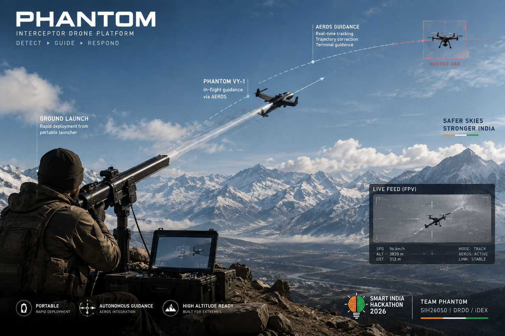
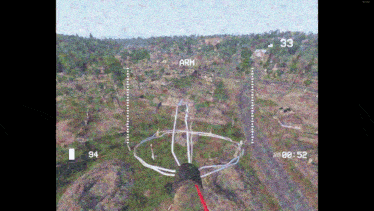
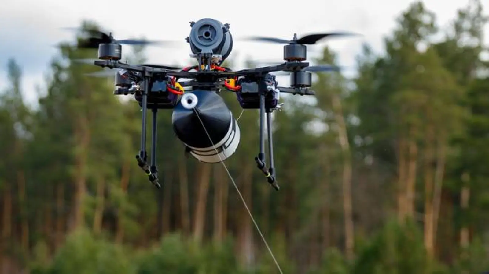
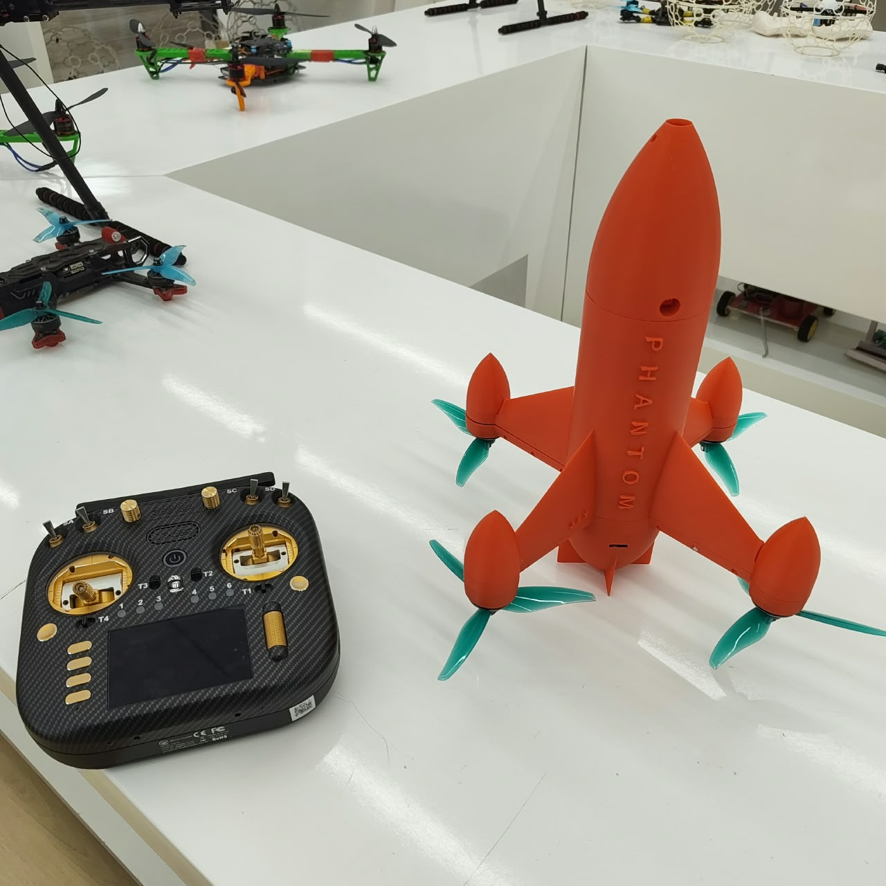
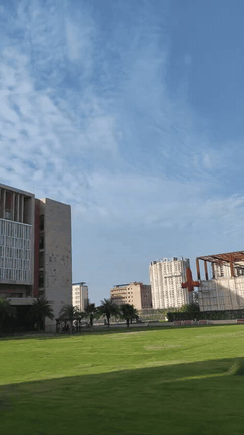
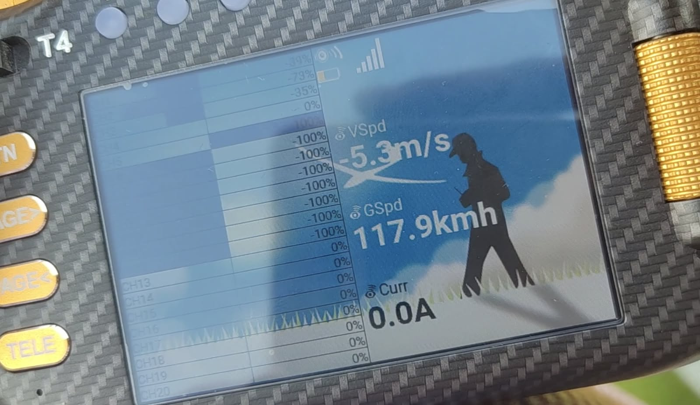
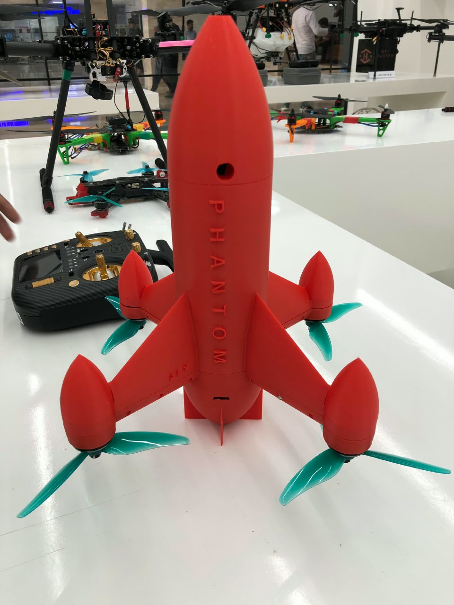
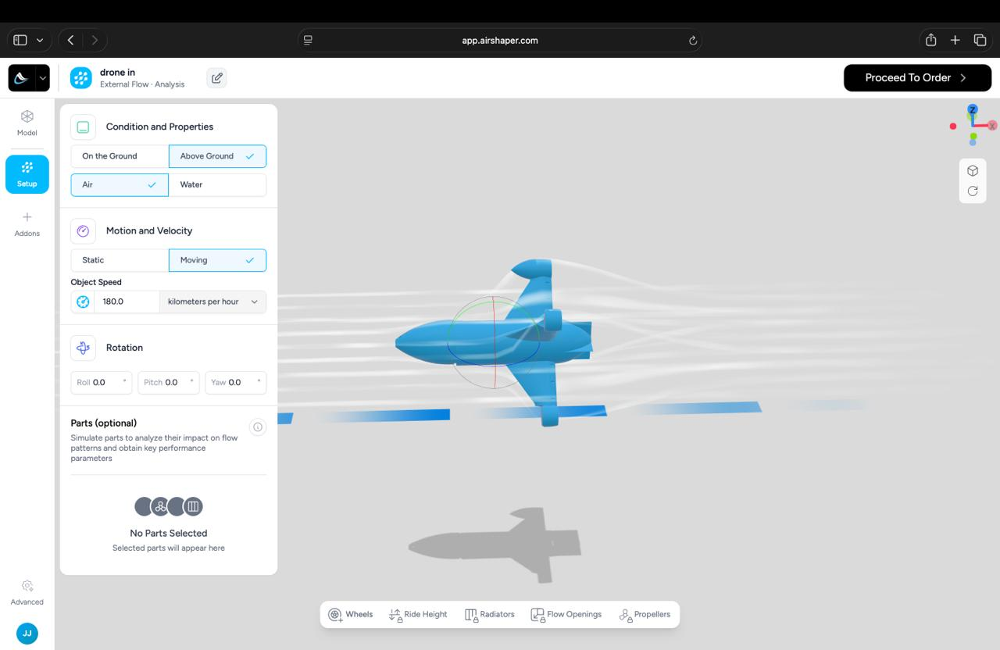

PHANTOM
HIGH ALTITUDE PERFORMANCE OPTIMIZATION & ROBUST DESIGN OF ANTI-DRONE SYSTEM
Interceptor Drone Based Response Concept. A robust interceptor architecture being developed around high-altitude flight, tracking, environmental awareness, health monitoring and controlled response.

THE THREAT
EVOLVED.
SO MUST THE RESPONSE.


RF JAMMING IS NOT THE ONLY AXIS OF DEFENCE.
Some FPV threats can use fiber-optic control links, reducing dependence on a conventional RF control path. A counter-UAS architecture therefore benefits from a response layer that can detect, track and physically intercept the threat.
THE ENVIRONMENT
CHANGES THE SYSTEM.
The supplied SIH-aligned material identifies low air density, low temperature, wind, vibration and changing atmospheric conditions as drivers that can degrade propulsion, endurance, sensing, control and structural performance.
TURN EACH FAILURE MODE
INTO AN ENGINEERING TASK.
SENSE → ESTIMATE
→ GUIDE → RESPOND
NOT A CONCEPT.
A PHYSICAL PLATFORM.

The supplied project material states that the VY-1 has been fabricated, integrated and field-tested, with active flight testing and tuning continuing.



MODEL IT.
SIMULATE IT.
THEN FLY IT.

Embed actual exported AirShaper flow fields here as they are generated.
Keep coefficient values blank until the simulation generates defensible results.
A visible engineering chain from model to real flight validation.
MEASURED.
SIMULATED.
TARGETED.
The supplied project material records 117.9 km/h as the maximum tested speed of the VY-1 chassis.
WHY THE SYSTEM
MATTERS.
A physical platform intended to extend a wider counter-UAS detection-and-response architecture.
Environmental disturbance is treated as an engineering problem across propulsion, structure, sensing, control and health.
A modular platform supports staged qualification and future sensing upgrades.
FEASIBILITY
- Physical airframe exists
- In-house prototyping / iteration
- AirShaper simulation path
- Current flight testing
VIABILITY
- Initial project funding secured
- Hardware-first development
- Modular COTS integration
- Path to representative validation
IMPACT
- Stable flight
- Reliable navigation
- Tracking consistency
- Health monitoring
- Environmental awareness
- System validation
DETECT → CUE
→ DEPLOY → TRACK.
FROM WORKING AIRFRAME
TO ROBUST PLATFORM.
WORKING PROTOTYPE
Physical VY-1, 117.9 km/h tested speed, camera / VTX tracking and current flight stack.
HIGH-ALTITUDE ROBUSTNESS
Thermal hardening, adaptive tuning, environmental monitoring and representative higher-altitude validation.
MULTI-SENSOR FUSION
Additional airborne sensing combined with EO for improved state awareness.
RADAR + EO
Radar integration is positioned as a future upgrade, not a current claim.
NETWORKED PLATFORMS
Longer-term multi-agent and distributed detection / response research.
ENGINEERING
BACKED BY EVIDENCE.
WE ARE NOT STARTING
FROM THE PROBLEM.
WE ARE ALREADY
BUILDING THE SOLUTION.
From aerodynamic simulation to physical flight, PHANTOM is building the interceptor platform and engineering the robustness required for harsh high-altitude conditions.